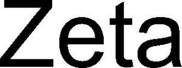

Trade Mark Journal No.2025/025 20 June 2025
WO0000001841448 (9,11,42)
Office of origin: Benelux Office for Intellectual Property (BOIP)
Date of International Registration:1 October 2024
Date of designation in the UK:
1 October 2024

- Class 9
- Software for analyzing and displaying animal data; system software detecting livestock parameters, in particular systems for detecting heat; system software detecting gait abnormalities in mammals; mammal birth detection systems; animal tracking systems; cameras, especially stationary cameras for use in livestock barns; switching, control and monitoring equipment for stable lighting; light switches, dimmers and electrical wiring for stable lighting.
- Class 11
- Lamps, lighting equipment and lighting fixtures for stables.
- Class 42
- Automation services for agriculture, in particular for livestock farming; SaaS (software as a service) services for agriculture, especially for livestock farming; development of new products in the field of livestock farming; technical advice on the development of new products for livestock farming; design and development of electronic equipment, computer hardware and computer software for the livestock industry; advice regarding the use and application of software, embedded software and equipment containing embedded software for livestock farming.
Lely Patent N.V.
Representative: Octrooibureau Van der Lely N.V., Cornelis van der Lelylaan 1, NL-3147 PB Maassluis, NETHERLANDS